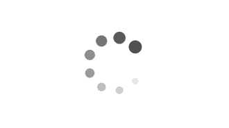

Abstract
Event cameras that asynchronously output low-latency event streams provide great opportunities for state estimation under challenging situations.
Despite event-based visual odometry having been extensively studied in recent years, most of them are based on the monocular, while few research on stereo event vision.
In this paper, we present ESVIO, the first event-based stereo visual-inertial odometry, which leverages the complementary advantages of event streams, standard images, and inertial measurements.
Our proposed pipeline includes the ESIO (purely event-based) and ESVIO (event with image-aided), which achieves spatial and temporal associations between consecutive stereo event streams.
A well-design back-end tightly-coupled fused the multi-sensor measurement to obtain robust state estimation.
We validate that both ESIO and ESVIO have superior performance compared with other image-based and event-based baseline methods on public and self-collected datasets.
Furthermore, we use our pipeline to perform onboard quadrotor flights under low-light environments.
Autonomous driving data sequences and real-world large-scale experiments are also conducted to demonstrate long-term effectiveness.
We highlight that this work is a real-time, accurate system that is aimed at robust state estimation under challenging environments.
Video Demo
IROS2023 Presentation

Dark Environment
Comparison with SOTA
Our ESIO compared with the ORB-SLAM3 and Ultimate-SLAM methods in HDR scenarios.